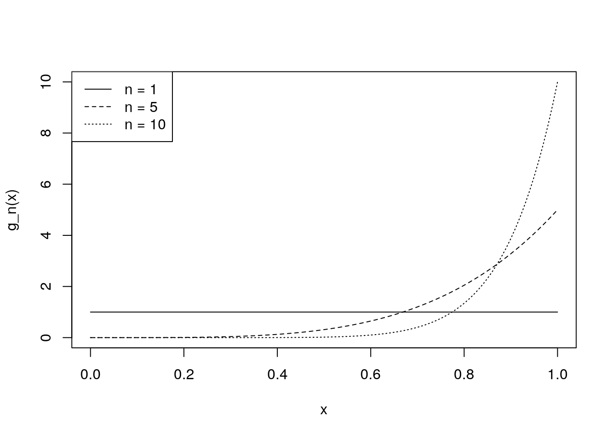

Chapter 5 Maxima and minima
5.1 Order Statistics
Suppose that \(Y_1, \ldots, Y_n\) represent \(n\) independently and identically distributed random variables each with cumulative distribution function \(F\).
Suppose that the corresponding observed values are \(y_1, \ldots, y_n\). Let these values, when ordered, be represented by \[y_{(1)} < y_{(2)} < \ldots < y_{(n)}.\] The \(y_{(i)}\), \(i = 1, \ldots, n\), are called the order statistics corresponding to \(y_1, \ldots, y_n\).
You have already met certain order statistics. For example, the sample median is an order statistic: for odd values of \(n\) the sample median is equal to \(y_{(\{n+1\}/2)}\), while for even \(n\) the sample median is defined as \[ [y_{(n/2)} + y_{(n/2+1)}]/2.\] We shall concentrate, however, on two particular order statistics: \(y_{(1)}\), the sample minimum, and \(y_{(n)}\), the sample maximum. We define the corresponding random variables \(Y_{(1)} = \min\{Y_1, \ldots, Y_n\}\) and \(Y_{(n)} = \max\{Y_1 , \ldots, Y_n \}\).
There are many applications for which maxima or minima are of interest. For example:
- Understanding outliers in statistical data: an outlier will often be the largest or smallest data point.
- In reliability engineering, a system will tend to fail at its weakest point (which might be thought of as the point with the minimum “strength”).
- In designing coastal defences one needs to understand the distribution of the wave heights of the highest tides.
- In insurance the behaviour of the largest claims is important.
There is a whole area of statistics devoted to the study of extremes, called extreme value theory. In this short chapter we just give a brief introduction to the subject.
5.2 The cdf of \(Y_{(n)}\), the largest value in a random sample of size \(n\)
Since \(Y_{(n)} = \max\{Y_1, \ldots, Y_n\}\), the probability that \(Y_{(n)} \leq y\) gives the cumulative distribution function of \(Y_{(n)}\), the sample maximum.
Now the event \(\{Y_{(n)} \leq y\}\) is identical to the event \[\{ Y_1 \leq y \text{ and } Y_2 \leq y \ldots \text{ and } Y_n \leq y\}.\] So \[G_n(y) = P(Y_{(n)} \leq y) = P(\text{all $Y_i \leq y$}) = P(Y_1 \leq y \text{ and } Y_2 \leq y \ldots \text{ and } Y_n \leq y).\] Thus, by independence \[G_n(y) = P(Y_1 \leq y)P(Y_2 \leq y) \ldots P(Y_n \leq y) = [F(y)]^n.\]
Example 5.1 (Maximum of dice rolls) Suppose I roll a fair die twice. What is the probability function of the maximum of the two scores?
We know that \(F(y) = y/6\) for \(y= 1, 2, 3, 4, 5, 6\), and \(n = 2\). So the distribution function of the maximum of the two scores is \[G_2(y) = \left(\frac{y}{6}\right)^2, \quad \text{for $y = 1, 2, \ldots, 6$}.\]
Hence \[P(Y_{(2)} = y) = \begin{cases} \Big(\frac{1}{6}\Big)^2 & \text{if $y = 1$} \\ \Big(\frac{y}{6}\Big)^2 - \Big(\frac{y - 1}{6}\Big)^2 & \text{if $y= 2, \ldots, 6$}. \end{cases} \]5.3 The pdf of the maximum in the continuous case
If the \(Y_i\) are continuous, each with density function \(f\), then the density function of \(Y_{(n)}\) may be found by differentiating \(G_n(y)\) with respect to \(y\), to give \[g_n(y) = \frac{d}{dy} G_n(y) = \frac{d}{dy} [F(y)]^n = n[F(y)]^{n-1} f(y)\] where the domain of the maximum is the same as that of each of the \(Y_i\).
Example 5.2 (Maximum of a uniform random sample) Suppose that each \(Y_i \sim U(0, \theta)\), so that \[F(y) = \frac{y}{\theta} \quad \text{for $0 < y < \theta$}.\]
So \(Y_{(n)}\) has cdf \[G_n(y) = \frac{y^n}{\theta^n} \quad \text{for $0 < y < \theta$},\] and pdf \[g_n(y) = \frac{d}{dy} G_n(y) = \frac{d}{dy} \frac{y^n}{\theta^n} = \frac{n y^{n-1}}{\theta^n}, \quad \text{for $0 < y < \theta$}.\]
We can use R to plot out what these pdfs look like, for \(\theta = 1\), and \(n = 1, 5,\) or \(10\):
g_n <- function(y, n, theta) {
n * y^{n-1} / theta^n
}
curve(g_n(x, n = 10, theta = 1), from = 0, to = 1, lty = 3,
ylab = "g_n(x)")
curve(g_n(x, n = 5, theta = 1), add = TRUE, lty = 2)
curve(g_n(x, n = 1, theta = 1), add = TRUE, lty = 1)
legend("topleft", lty = 1:3,
legend = c("n = 1", "n = 5", "n = 10"))
As expected, we see that as \(n\) increases, it becomes more likely that the maximum of the \(n\) \(U(0, 1)\) variables is close to \(1\).
5.4 The cdf of \(Y_{(1)}\), the smallest value in a random sample of size \(n\)
Since \(Y_{(1)} = \min\{Y_1, \ldots, Y_n\}\), the probability that \(Y_{(1)} \leq y\) gives the cumulative distribution function of \(Y_{(1)}\), the smallest value in the sample. Now \[\begin{align*} G_1(y) = P(Y_{(1)} \leq y) &= 1 - P(Y_{(1)} > y) \\ &= 1 - P(\text{all $Y_i > y$}) \\ &= 1 - P(Y_1 > y \text{ and } Y_2 > y \ldots \text{ and } Y_n > y) \\ &= 1 - P(Y_1 > y)P(Y_2 > y) \ldots P(Y_n > y) \\ &= 1 - [1 - F(y)]^n. \end{align*}\]by independence of the \(Y_i\).
5.5 The pdf of the minimum in the continuous case
If the \(Y_i\) are continuous, each with probability density function \(f\), then the pdf of \(Y_{(1)}\) may be found by differentiating \(G_1(y)\) with respect to \(y\) to give \[g_1(y) = \frac{d}{dy} G_1(y) = n [1 - F(y)]^{n-1} f(y),\] where the domain of the minimum is the same as that of each of the \(Y_i\).
This hints at some interesting structure in the probabilistic behaviour of maxima and minima. The central limit theorem essentially says that under certain conditions the sum of \(n\) independent, identically distributed random variables is approximately normal as \(n\) grows large. There are corresponding results for maxima and minima, though the large-\(n\) distribution is not normal (it is the so-called generalised extreme value distribution).